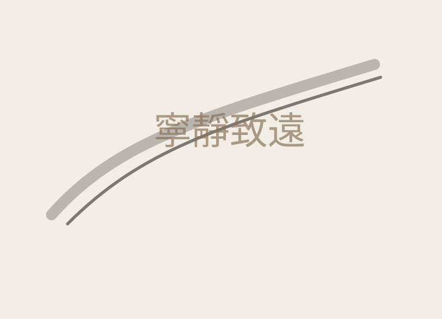
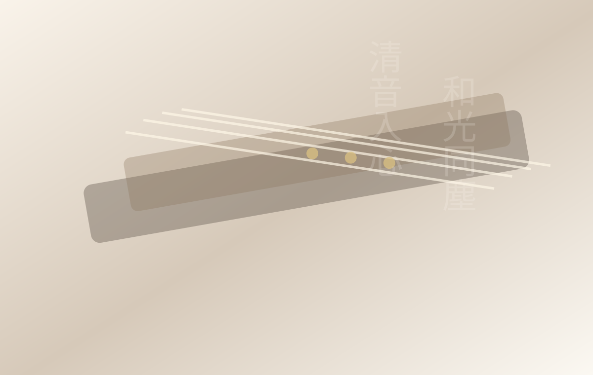
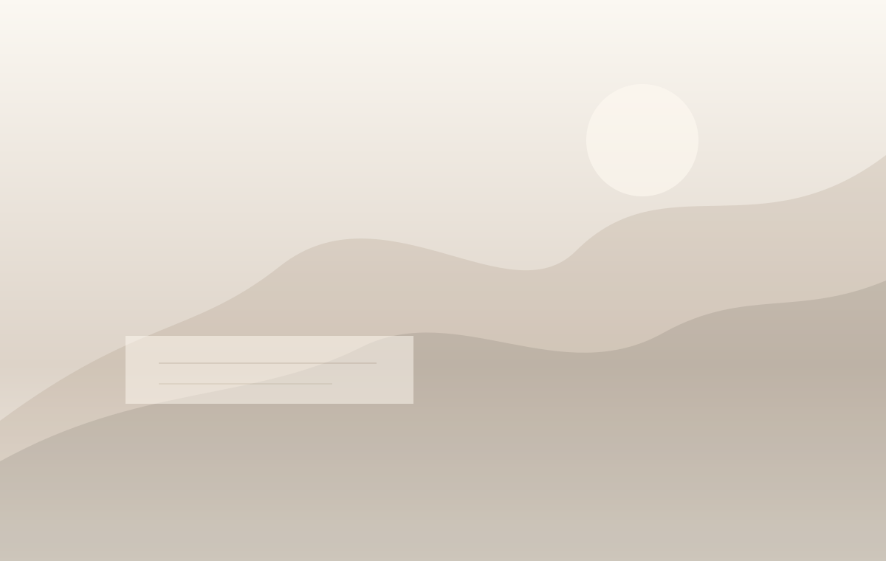

寧靜致遠
線上展覽｜水墨紙本

線上展覽｜水墨紙本

最新上傳｜直幅

精選典藏｜橫幅

▶靜心音樂

▶原創音樂
▶
共修選曲
修行不是逃離生活，而是在生活中看見自己。
每一個念頭與選擇，都正在成為生命的方向。
安靜下來，讓心回到清明。
PRACTICE
課程、讀書會與共修，陪伴你把理解帶回日常，把日常轉化成修行。
ABOUT
昊道文化是一個公益文化平台，從生活問題出發，以聖賢智慧、心靈教育、書法藝術、原創音樂與共修服務，陪伴人走向光明與覺醒。
陪伴生命成長，提升內心文明。讓修行回到人與生活，而不是停留在遙遠概念。
建立典藏、開展課程、陪伴讀書會、串連台灣共修點，讓文化成為可參與的日常。
從小型讀書與共修開始，逐步累積書法、音樂、文章與公益課程，形成開放的文化平台。
LEARNING & PRACTICE
從理解到實踐，從個人成長到服務他人。
台北 / 適合第一次接觸昊道者
線上直播 / 適合想安定身心者
由經典回到日常選擇
以簡明語言理解經典智慧
EXPLORE & ARCHIVE
以書法、音樂與經典智慧，建立可探索、可典藏、可回到日常實踐的文化入口。
線上展覽、全部作品與作品詳情。
音樂首頁、全部作品、作品詳情與播放器。
經典首頁、全部文章與文章詳情。
START YOUR JOURNEY
FAQ